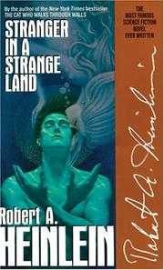

Hermann Hesse wrote Siddhartha after he traveled to India in the 1910s. It tells the story of a young boy who travels the country in a quest for spiritual enlightenment in the time of Guatama Buddha. It is a compact, lyrical work, which reads like an allegory about the finding of wisdom.

Stranger in a Strange Land
Stranger in a Strange Land is a 1961 science fiction novel by American author Robert A. Heinlein. It tells the story of Valentine Michael Smith, a human who comes to Earth in early adulthood after being born on the planet Mars and raised by Martians. The novel explores his interaction with—and eventual transformation of—terrestrial culture. The title is an allusion to the phrase in Exodus 2:22. According to Heinlein, the novel's working title was The Heretic. Several later editions of the book have promoted it as "The most famous Science Fiction Novel ever written".
Bhagavad-gita
Bhagavad-gita in Hindi, is knowledge of 5 basic truths and the relationship of each truth to the other: These five truths are Krishna, or God, the individual soul, the material world, action in this world, and time. In translating the Gita, A. C. Bhaktivedanta Swami Prabhupada has remained loyal to the intended meaning of Krishna's words, and has unlocked all the secrets of the ancient knowledge of the Gita and placed them before us as an exciting opportunity for self-improvement and spiritual fulfillment. The Gita is a conversation between Krishna and His dear friend Arjuna.